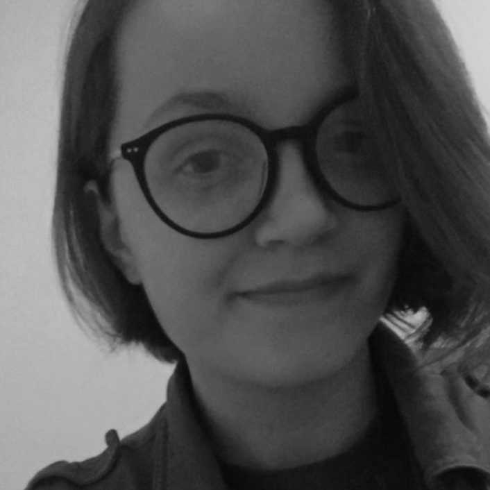

Bournemouth University, Bournemouth - Degree
Gloucestershire College, Cheltenham - Foundation
Denmark Road High School, Gloucester - A level (3)
Pages Creative, Cheltenham (2018)
McDonalds Crew Member, Cheltenham (2018-2020)
Digital Commissions, Remote (2016 - 2022)
hard skills
3D Modelling
Maya, Mudbox
Digital Art
Krita
Interface Design
Level Design
Unity, Unreal
Lighting and Texturing
Substance Painter/Designer
soft skills
Creative Mindset
Technical Ability
Work Ambition/Passion
Punctuality
Customer Service
Flexibility
Working under pressure
Project management
Time management
Business fundamentals
Jaguar Engineering Apprenticeship (2017)
STEM - Aviation Competition (2016)